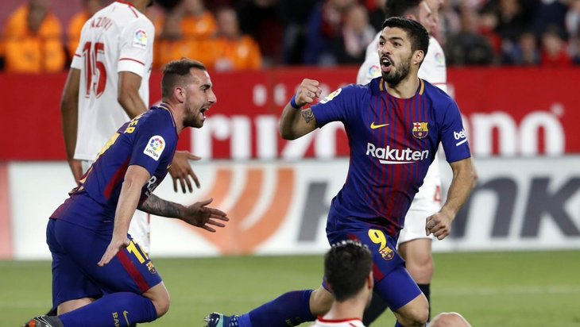

POLITICA
La sección de política en este periodico digital te trae todo acerca de la política NACIONAL en donde encontrarás todo lo sucedido día a día en el mundo de la política en nuestro país El Salvador, estando enterado en todo momento con noticias actualizadas
Varios diputados de la Asamblea Legislativa siguen sin tener oficina propia y algunos solo llegan a plenarias y reuniones de comisión

El VAR evitó el empate del Valladolid que sobre la hora logró en fuera de juego el empate.
DEPORTE
Nuestra seccion de deporte te trae toda la información reciente del mundo del deporte, ya sean nacionales o internacionales, hablando detalle a detalle de los sucesos deportivos de todo el mundo. es una sección en la cual contamos con expertos analiztas del deporte para traerte la mejor información de tu deporte favorito y no te arrepentiras del contenido. Estoy tratando de dar información sobre el contenido de la sección del periodico pero más parece publicidad. Con este contenido estarás más que actualizado para que no te quedes atrás y seas el primero en darle toda la información del mundo deportivo a tus amigos de escuela, universidad o del trabajo
Barcelona sufre para ganar en Valladolid, pero es líder en solitario
El VAR evitó el empate del Valladolid que sobre la hora logró en fuera de juego el empate.